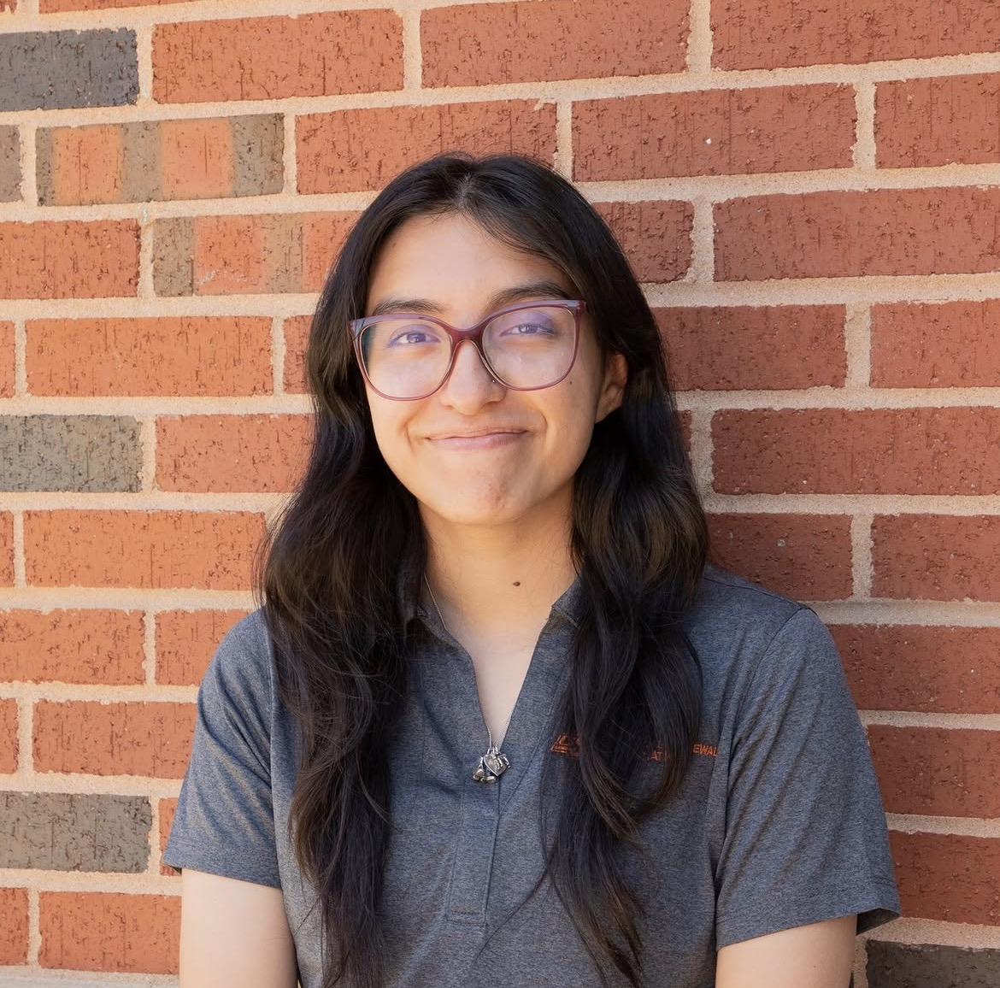
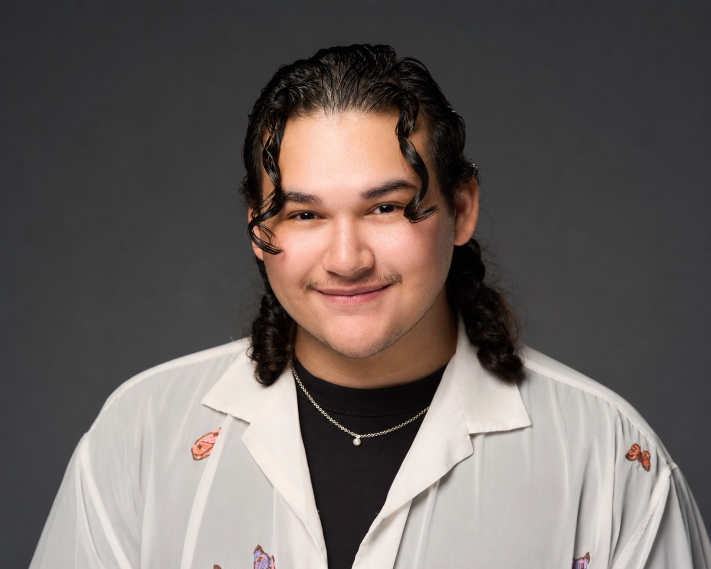

Our lab brings together researchers passionate about understanding how humans experience and respond to the sensory world of food.
Assistant Professor of Sensory Science | Texas A&M University
Affiliated Scientist | Monell Chemical Senses Center
Dr. Robert Pellegrino is an assistant professor of sensory science at Texas A&M and an affiliated scientist at the Monell Chemical Senses Center, specializing in smell and texture perception. With doctorates in Food Science and Medical Research, his work spans multisensory integration in eating, smell disorder diagnostics, and the interplay between olfactory and texture perception in consumer experience. He serves in leadership roles within the Global Consortium for Chemosensory Research (GCCR) and the International Society of Neurogastronomy (ISN). He consults for many beverage and food companies on product development and does food pop-ups around Knoxville, TN and Philadelphia, PA.
Favorite smell
Cis-3-hexenol (freshly cut grass)
Favorite texture
Chewiness of beef tendon
Our lab is growing. We welcome motivated graduate students interested in sensory science, chemosensation, and food science. Get in touch to learn about opportunities.
Lab Manager
B.S. Plant Science & Finance, China Agricultural University; PhD Poultry Science, University of Georgia; postdoctoral research in food microbiology, University of Arkansas. Hanyi's work includes maintaining laboratory resources and ensuring regulatory compliance, coordinating industry-sponsored and academic sensory research projects, managing participant recruitment and study logistics, and supporting graduate student research.
hanyi.shi@ag.tamu.eduFavorite smell
Osmanthus
Favorite texture
Chewy
PhD Student
B.S. and M.S. Food Science & Technology, Pakistan. Bisma's research interests focus on food texture, sensory perception, and predictive modeling to better understand the relationships between instrumental measurements and human sensory experiences. She also has a passion for baking and enjoys exploring how ingredients, formulations, and processing techniques influence the texture, flavor, and overall sensory quality of food.
bismakhaliq@tamu.eduFavorite smell
Lavender
Favorite texture
Velvety matte texture of handcrafted ceramics
MS Student
B.S. Food Science & Technology, Texas A&M University (2026). Kade's research interests center on the perceived synergistic and antagonistic relationships between texture and flavor/aroma, approached through a product development lens with a focus on beverage R&D.
kade_gorman@tamu.eduFavorite smell
Vanillin
Favorite texture
Fresh blackberries

Undergraduate Researcher
Amy is an Animal Science undergraduate student with an interest in understanding the factors that drive consumer preferences and emotional responses to food. She is currently working on texture preferences across different demographics.
arodriguez0127@tamu.eduFavorite smell
Arnica
Favorite texture
Velvet

Undergraduate Researcher
Brendan is an undergraduate Food Science and Technology major with a minor in Genetics. Brendan's passion for food science began during his time in culinary school, which led him to transfer to A&M and pursue higher education. Brendan's research interests include nutrigenomics tailored to Latino diets.
Favorite smell
Marshmallows
Favorite texture
Creamy